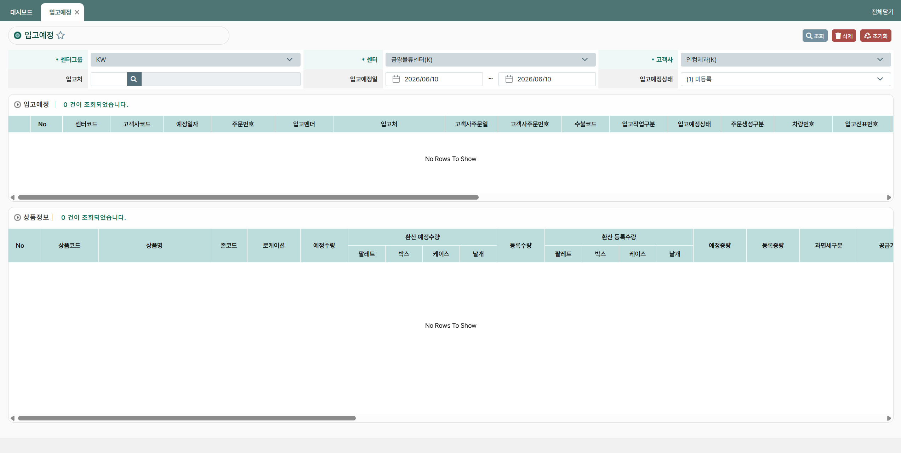
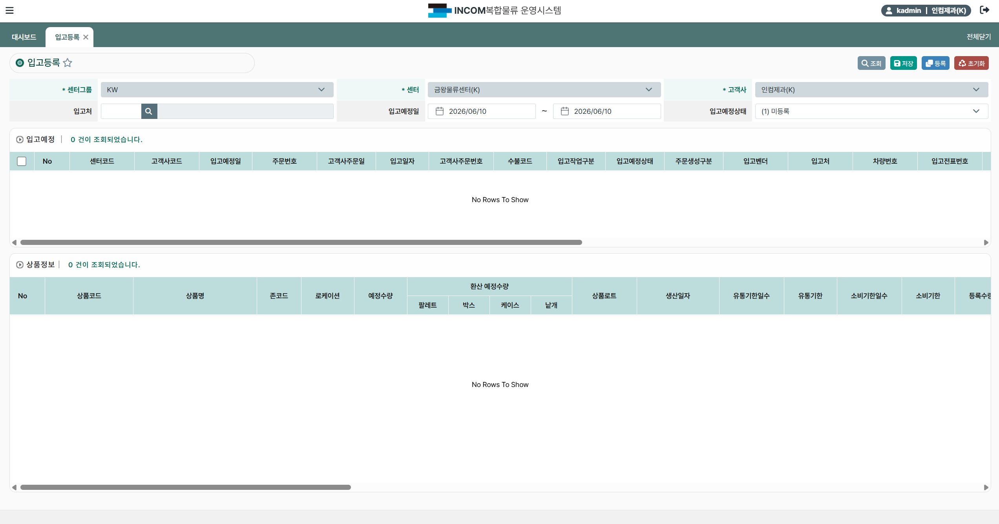
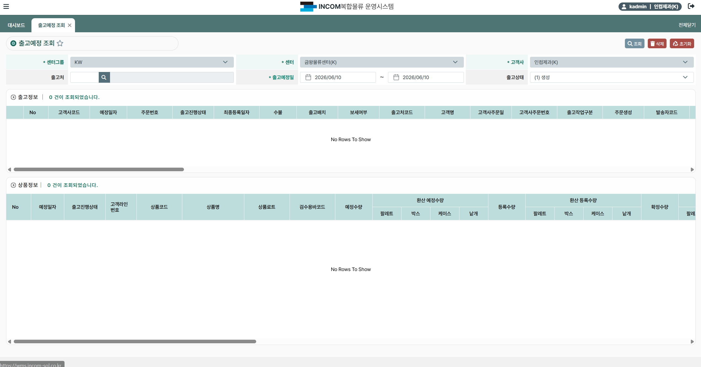
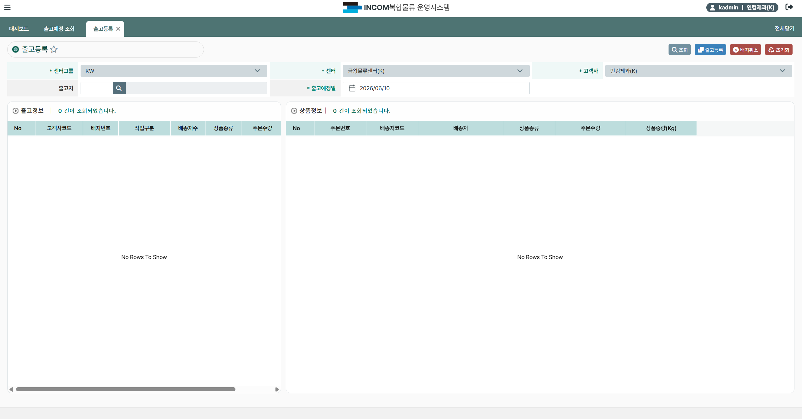
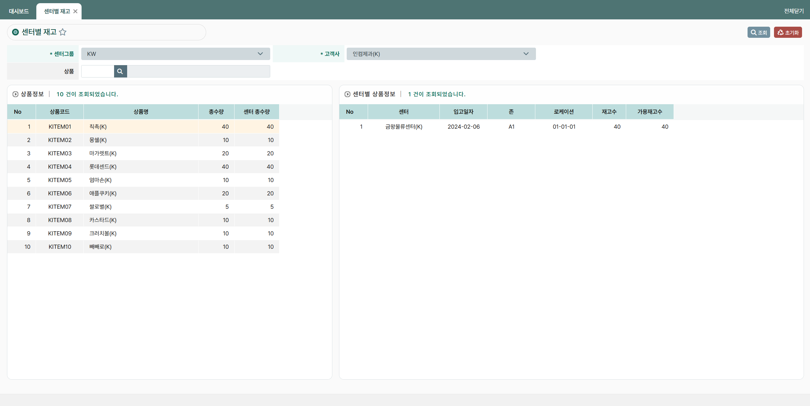
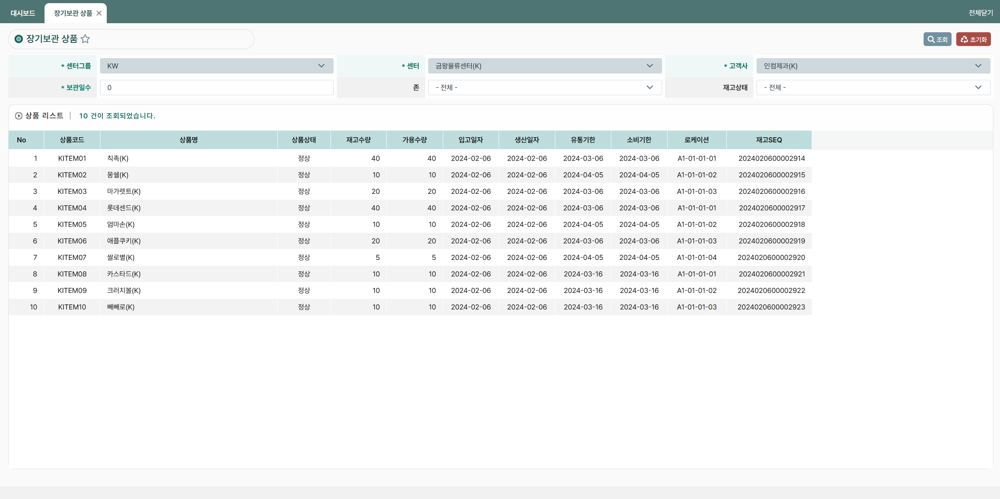
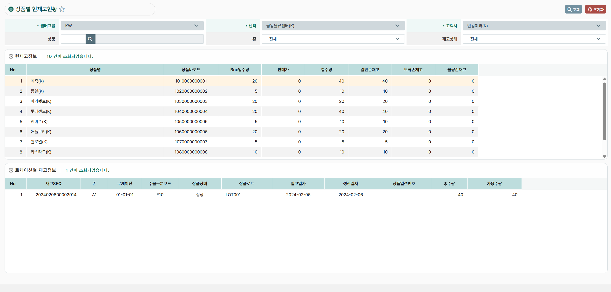
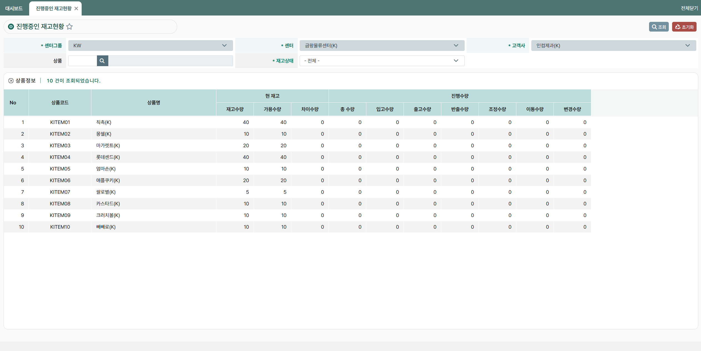

창고관리시스템(WMS) 고도화
2023.09 ~ 2023.12 (4개월)
Vue.js 기반 입출고·재고 관리 화면 개발 및 대용량 재고 데이터 조회 개선
프로젝트 개요
입고, 출고, 재고 조회 등 물류센터의 주요 업무를 지원하는 창고관리시스템(WMS) 고도화 프로젝트입니다. Vue.js를 활용해 물류 업무별 조회 및 관리 화면을 개발하고, 상품과 재고 데이터를 연계해 사용자가 필요한 정보를 효율적으로 확인할 수 있도록 화면을 구성했습니다.
센터·존·로케이션별 재고 조회, LOT 및 유통기한 관리, 장기보관 상품 조회와 재고 수불 현황 기능을 구현했습니다. 또한 대량의 재고 데이터 조회 과정에서 발생하는 성능 저하와 수불 상태별 집계 불일치를 분석하고 개선했습니다.
기술 스택
담당 업무
- 입출고 관리 화면 개발: 입고예정, 입고등록, 출고예정 등 물류 업무별 데이터 조회 및 관리 UI 구현
- 재고 조회 UI 개발: 상품 목록과 상세 재고 정보를 연계하고, 센터·존·로케이션별 재고를 확인하는 화면 구성
- 조회 조건 및 데이터 표시: 상품, 물류 거점, 재고 상태, 보관일수 등 조건에 따른 데이터 조회 및 표시 기능 구현
- 물류 데이터 처리: LOT·유통기한·포장 단위별 수량과 입출고 진행 상태를 확인할 수 있는 화면 개발
- 조회 및 집계 로직 개선: 재고 집계 SQL과 NULL 처리, 수불 상태별 조건을 점검해 조회 결과의 정확성과 처리 효율 개선
주요 개발 기능
1. 입고·출고 관리
입고예정 정보 확인부터 실제 입고 등록, 출고예정 및 확정 수량 조회까지 물류 업무 단계에 맞춘 화면을 개발했습니다.
- 입고예정 목록과 상품 상세 정보를 연계한 조회 화면 구현
- 로케이션, LOT, 생산일자, 유통기한 등 입고 관련 정보 표시 및 관리
- PLT / BOX / CS / EA 포장 단위별 수량 정보 표시
- 출고 대상 상품과 바코드 정보, 출고 진행 상태 조회
- 입고·출고 확정 수량 및 처리 상태 확인 기능 구현
2. Master-Detail 기반 재고 조회
상품 목록에서 선택한 항목의 상세 재고 정보를 확인할 수 있도록 목록과 상세 영역을 연계한 조회 UI를 구성했습니다.
- 상품 목록과 상세 재고 영역을 분리한 Split UI 구현
- 상품 선택에 따른 센터·존·로케이션별 재고 정보 연계
- 일반·보류·불량 등 재고 상태별 수량 표시
- 보관일수 조건을 활용한 장기보관 상품 조회
- 상품별 재고 현황과 보관 위치를 한 화면에서 확인할 수 있도록 구성
3. 재고 수불 현황 통합 조회
현재 보유한 재고와 입고·출고·이동·조정 등 진행 중인 수불 데이터를 함께 확인할 수 있도록 통합 조회 화면을 개발했습니다.
- 현재고와 진행 중인 수불 수량을 함께 확인하는 조회 기능 구현
- 수불 유형과 재고 상태에 따른 데이터 구분 및 표시
- 조회 조건과 집계 결과를 확인할 수 있도록 화면 구성
주요 화면

입고예정 목록과 상품 정보를 연계하고 포장 단위별 수량 확인

입고 관련 정보 확인 및 LOT·유통기한 기준의 재고 관리

출고예정 정보와 진행 상태를 조건별로 조회

출고 대상 상품 정보와 바코드, 확정 수량 확인

상품 목록과 센터·로케이션별 상세 재고를 연결한 Master-Detail UI

보관일수 기준 장기보관 상품 및 해당 재고 상태 확인

재고 상태별 집계 수량과 로케이션별 재고 정보 조회

현재고와 입고·출고·이동·조정 등 진행 중인 수불 수량 통합 조회
트러블 슈팅 (Problem Solving)
1. 대용량 재고 조회 성능 개선
문제 상황
재고 조회 시 여러 테이블의 데이터를 집계하는 과정에서 응답이 지연됐으며, 대량의 조회 결과가 화면에 전달되면서 그리드 렌더링과 스크롤 반응도 저하되는 문제가 있었습니다.
원인 분석 및 해결
- 센터·상품 등 주요 조회 조건에 사용되는 컬럼과 인덱스 확인
- 다중 GROUP BY 및 SUM 연산을 포함한 집계 SQL의 실행 구조 점검
- 불필요한 서브쿼리와 데이터 조회 범위를 검토해 쿼리 처리 부담 개선
- 대량 데이터 표시 시 그리드 렌더링 부담을 줄이기 위한 화면 처리 방식 검토
개선 결과
데이터 조회부터 화면 표시까지의 병목 구간을 구분해 점검하고, SQL 처리와 그리드 렌더링 부담을 줄여 재고 조회 화면의 사용성 개선에 기여했습니다.
2. 수불 상태별 재고 집계 불일치 개선
문제 상황
입고·출고·이동·조정 등 수불 상태에 따라 집계 조건이 달라지는 상황에서 일부 데이터의 NULL 값과 조건 분기 처리로 인해 진행 재고 수량이 기대한 결과와 일치하지 않는 문제가 있었습니다.
원인 분석 및 해결
- 수불 유형 및 처리 상태별 집계 조건을 확인하고 분기 로직 점검
- COALESCE를 적용해 NULL 값이 집계 결과에 미치는 영향 보완
- 수불 상태와 수량 조합별로 조회 결과를 비교해 예외 상황 검증
개선 결과
NULL 값과 수불 상태별 조건에 따른 집계 예외를 보완해 현재고 및 진행 재고 데이터의 일관성을 개선했습니다.
프로젝트 성과 및 기술 역량
- 업무 중심 UI 개발: 입고·출고·재고 업무 흐름에 맞춘 조회 및 관리 화면 구현
- 데이터 연계 UI 설계: Master-Detail 구조를 통해 상품 목록과 상세 재고 정보를 연결하고 조회 편의성 개선
- 대용량 조회 문제 분석: SQL 집계 구조와 화면 렌더링을 함께 검토해 조회 지연 원인 분석 및 개선
- 데이터 정합성 개선: 수불 상태별 조건과 NULL 처리 로직을 점검해 집계 결과의 일관성 강화
- WMS 도메인 이해: LOT·유통기한·재고 상태·센터·로케이션 등 물류 업무 데이터에 대한 이해 확보